📌 Chapter snapshot (CBSE)
- Chapter 10 of NCERT Class 10 Mathematics (reprint 2026-27): sections 10.1 to 10.3, 2 theorems with proof, 3 solved examples, Exercise 10.1 (4 questions) and Exercise 10.2 (13 questions), then the summary 10.4.
- Part of the unit Geometry (Triangles + Circles), worth 15 marks in the CBSE 80-mark paper.
- Both theorems are on the CBSE syllabus with proof: (1) the tangent is perpendicular to the radius at the point of contact, (2) the tangents from an external point are equal.
- Recent CBSE 30/1/1 papers asked: angle MCQs on two tangents (every year), a 2-mark Pythagoras question (2025, 2026), a 3-mark proof (every year) and an incircle case study (2023, 2024).
Video lesson: Circles
A 6-minute animated lesson with narration and subtitles. Tap a topic to jump to it.
Can't play it here? 🔒 Download the video (MP4) with the PIN from MT Classes and watch it offline.
A line and a circle
In Class 9 you met the circle: all points at a fixed distance (the radius) from a fixed point (the centre). Now put a straight line PQ next to a circle. Only three things can happen.
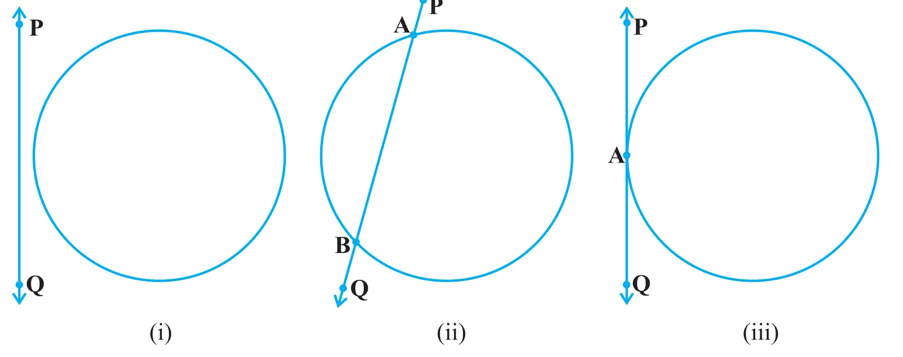
| Case | Common points | Name of the line | Distance of the line from O |
|---|---|---|---|
| Fig. 10.1 (i) | 0 | Non-intersecting line | more than r |
| Fig. 10.1 (ii) | 2 (A and B) | Secant | less than r |
| Fig. 10.1 (iii) | 1 (A) | Tangent | exactly r |
Look at a pulley over a well (Fig. 10.2). The rope on each side of the pulley, taken as a ray, is like a tangent to the circle of the pulley. There is no fourth position of a line with respect to a circle.
🗣️ Word story
“Tangent” comes from the Latin tangere, “to touch”. The word was introduced by the Danish mathematician Thomas Fineke in 1583.
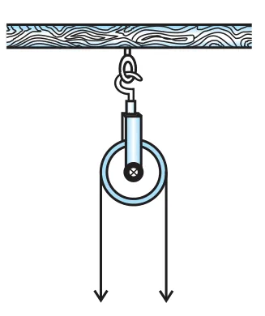
Tangent to a circle
A tangent to a circle is a line that intersects the circle at only one point. That point is the point of contact, and we say the tangent touches the circle there.
Activity 1: rotate a wire about P
Fix a straight wire AB to a circular wire at P so that it can turn about P. In most positions it cuts the circle at P and at a second point (Q1, Q2, Q3 or R1, R2, R3). In exactly one position, A′B′, it meets the circle at P only.
As AB turns towards A′B′, the second point Q1 slides closer and closer to P and finally sits on P.
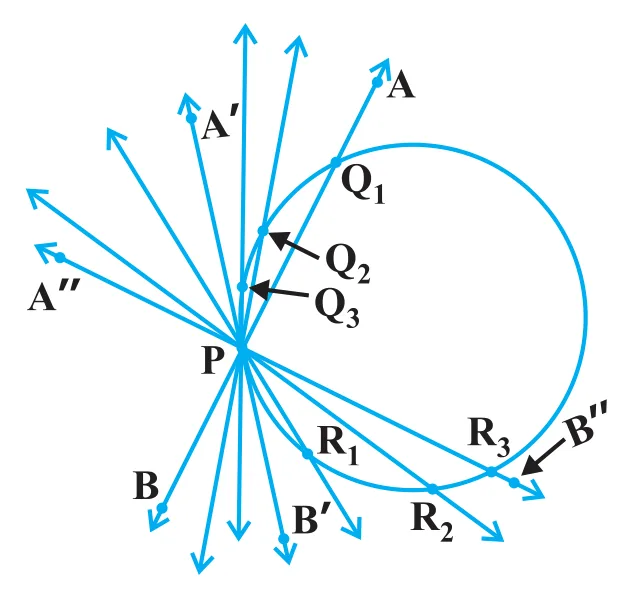
🔑 Big idea
There is only one tangent at a point of the circle. The tangent to a circle is a special case of the secant, when the two end points of its corresponding chord coincide.
Activity 2: slide a secant sideways
Draw a secant PQ and many lines parallel to it on both sides. The chord they cut gets shorter and shorter, and becomes zero at P′Q′ on one side and at P″Q″ on the other side. These two lines are the tangents parallel to PQ.
So there cannot be more than two tangents parallel to a given secant. (This is Ex 10.1 Q2 (iii).)
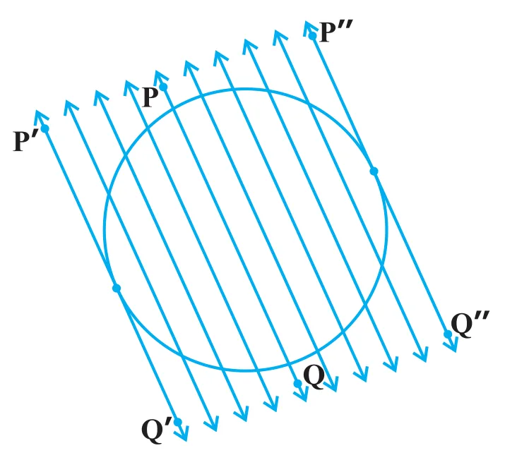
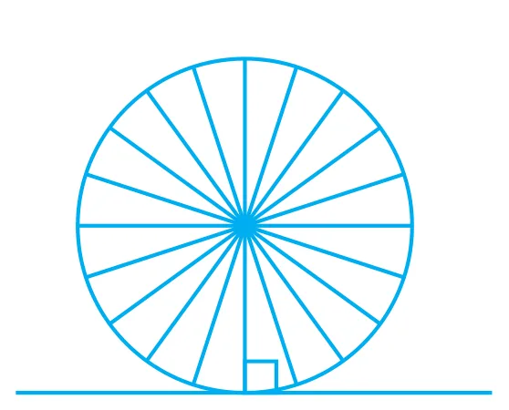
Watch a bicycle or a bullock cart. The spokes lie along radii, and the wheel always rolls along a line which is a tangent to it. In every position, the spoke through the point of contact looks perpendicular to the ground. NCERT now proves this.
Theorem 10.1: The tangent at any point of a circle is perpendicular to the radius through the point of contact.
Given: a circle with centre O and a tangent XY at the point P.
To prove: OP ⊥ XY.
Construction: take any point Q on XY other than P and join OQ.
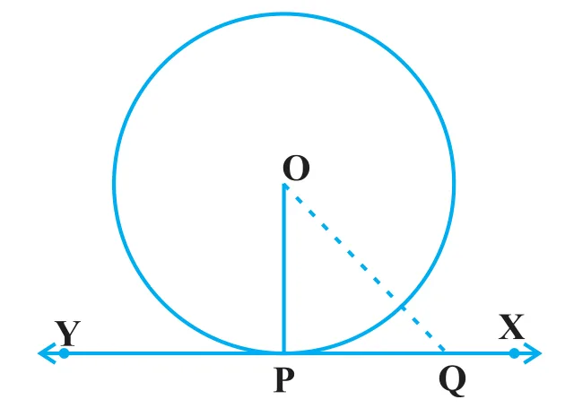
Proof:
- Q lies outside the circle. (If Q were inside, XY would cut the circle twice and be a secant, not a tangent.)
- So OQ is longer than the radius: OQ > OP.
- This is true for every point of XY except P. So OP is the shortest distance from O to the line XY.
- The shortest segment from a point to a line is the perpendicular (Theorem A1.7). Hence OP ⊥ XY. ∎
📝 NCERT Remarks
- At any point on a circle there can be one and only one tangent.
- The line containing the radius through the point of contact is called the normal to the circle at that point.
Tangent Explorer
Move the point P or the line. Watch how many tangents you get and see the working the way you write it in the board exam. The tangent length comes from Pythagoras because the radius meets the tangent at 90°.
Number of tangents from a point
Activity 3: inside, on, outside
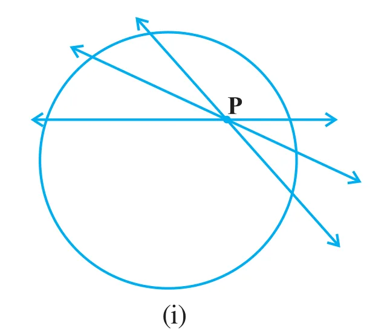
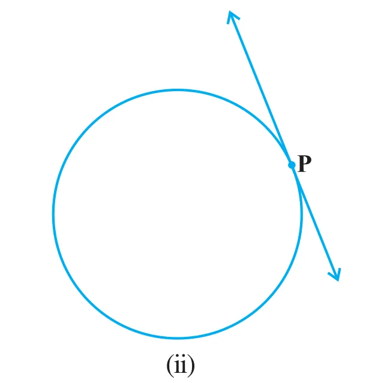
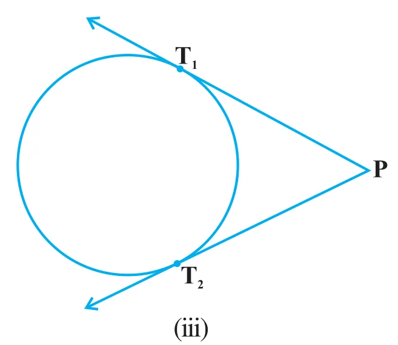
Fig. 10.6
Case 1 P inside
There is no tangent to a circle through a point inside it. Every line through P cuts the circle in two points.
Case 2 P on the circle
There is one and only one tangent through a point on the circle.
Case 3 P outside
There are exactly two tangents through a point outside the circle.
In Fig. 10.6 (iii), T1 and T2 are the points of contact. The segment from the external point P to the point of contact is called the length of the tangent from P. Measure PT1 and PT2: they are always equal.
Theorem 10.2: The lengths of tangents drawn from an external point to a circle are equal.
Given: a circle with centre O, a point P outside it and two tangents PQ and PR.
To prove: PQ = PR.
Construction: join OP, OQ and OR.
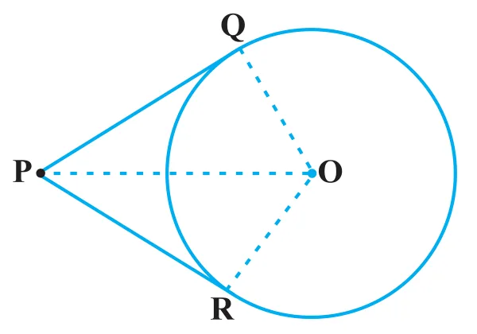
Proof: ∠OQP = ∠ORP = 90° (radius ⊥ tangent, Theorem 10.1). In right triangles OQP and ORP:
| OQ = OR | radii of the same circle |
| OP = OP | common (hypotenuse) |
| ∠OQP = ∠ORP = 90° | Theorem 10.1 |
| ΔOQP ≅ ΔORP | RHS |
| PQ = PR | CPCT ∎ |
📝 NCERT Remarks
- Proof by Pythagoras: PQ² = OP² − OQ² = OP² − OR² = PR² (as OQ = OR), so PQ = PR.
- Also ∠OPQ = ∠OPR, so OP bisects ∠QPR: the centre lies on the bisector of the angle between the two tangents. (By CPCT, ∠POQ = ∠POR too.)
Results you will use again and again
Almost every question in this chapter is one of these results plus Pythagoras or angle-sum. Learn the picture with each one.
Theorem 10.1
radius ⊥ tangent
∠OPT = 90° at the point of contact
Theorem 10.2
PT₁ = PT₂
tangents from one outside point
Angle pair
∠P + ∠O = 180°
angle between tangents + angle at centre (Ex 10.2 Q10)
Concentric circles
chord = 2√(R² − r²)
bisected at the point of contact
Circumscribed quad
AB + CD = AD + BC
opposite sides add up equally
Incircle of a triangle
tangent from A = s − a
area = r × s (s = semi-perimeter)
| Also true (proved in the exercises) | Where |
|---|---|
| Tangents at the ends of a diameter are parallel | Ex 10.2 Q4 |
| The perpendicular to a tangent at its point of contact passes through the centre | Ex 10.2 Q5 |
| ∠PTQ = 2∠OPQ for tangents TP, TQ | Example 2 |
| Between two parallel tangents, a third tangent AB makes ∠AOB = 90° | Ex 10.2 Q9 |
| A parallelogram circumscribing a circle is a rhombus | Ex 10.2 Q11 |
| Opposite sides of a circumscribed quadrilateral subtend supplementary angles at O | Ex 10.2 Q13 |
🧠 Pythagoras triples to spot instantly (r, tangent, d)
- (3, 4, 5) · (5, 12, 13) · (7, 24, 25) · (8, 15, 17) · (9, 40, 41) · (20, 21, 29) and their multiples, like (6, 8, 10) or (10, 24, 26).
- Tangent length = √(d² − r²). Radius = √(d² − t²). d is always the longest because it is the hypotenuse.
- Angle facts: ∠OPT = 90°, so in quadrilateral OATB the two tangent angles add up with the centre angle to 180°.
Solved examples (NCERT)
Example 1: In two concentric circles, the chord of the larger circle which touches the smaller circle is bisected at the point of contact.
Given: concentric circles C1 (larger) and C2 with centre O; chord AB of C1 touches C2 at P.
To prove: AP = BP.
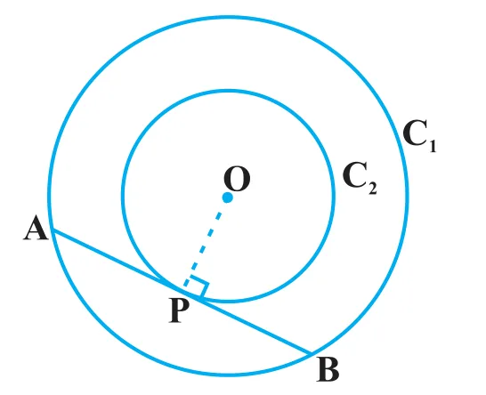
- Join OP. AB is a tangent to C2 at P and OP is a radius of C2, so OP ⊥ AB (Theorem 10.1).
- AB is also a chord of C1, and the perpendicular from the centre to a chord bisects the chord.
- So AP = BP. ∎
Use it with numbers: AP = √(R² − r²), so AB = 2√(R² − r²). Radii 5 and 3 give AB = 8 cm (Ex 10.2 Q7); radii 5 and 4 give 6 cm (CBSE 2026).
Example 2: Two tangents TP and TQ are drawn to a circle with centre O from an external point T. Prove that ∠PTQ = 2∠OPQ.
Given: circle with centre O, external point T, tangents TP and TQ with points of contact P and Q.
To prove: ∠PTQ = 2∠OPQ.
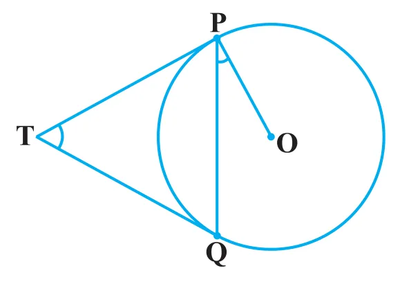
Let ∠PTQ = θ.
By Theorem 10.2, TP = TQ, so ΔTPQ is isosceles and ∠TPQ = ∠TQP = 12(180° − θ) = 90° − 12θ. [1]
By Theorem 10.1, ∠OPT = 90°. [1]
So ∠OPQ = ∠OPT − ∠TPQ = 90° − (90° − 12θ) = 12θ = 12∠PTQ.
∠PTQ = 2∠OPQ ∎ [1]
Asked as CBSE 2023 Q29 (3 marks); the [1] marks above are the official split. Try it in Lab 3.
Example 3: PQ is a chord of length 8 cm of a circle of radius 5 cm. The tangents at P and Q intersect at T. Find TP.
Join OT; let it cut PQ at R. ΔTPQ is isosceles (TP = TQ) and TO bisects ∠PTQ, so OT ⊥ PQ and OT bisects PQ: PR = RQ = 4 cm.
OR = √(OP² − PR²) = √(5² − 4²) = 3 cm.
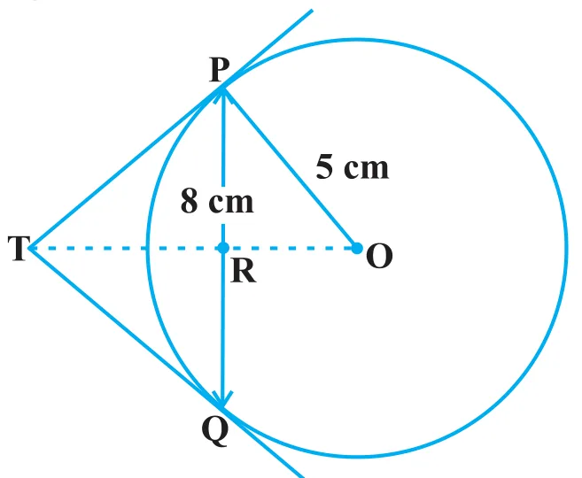
Method 1: similar triangles
∠TPR + ∠RPO = 90° (= ∠OPT) and ∠TPR + ∠PTR = 90° (angle sum in right ΔTRP). So ∠RPO = ∠PTR.
So right ΔTRP ~ right ΔPRO (AA), which gives TPPO = RPRO, i.e. TP5 = 43.
TP = 203 cm ≈ 6.67 cm
Method 2: Pythagoras twice (NCERT note)
Let TP = x and TR = y. In right ΔPRT: x² = y² + 16 … (1). In right ΔOPT: x² + 5² = (y + 3)² … (2).
(2) − (1): 25 = 6y − 7, so y = 326 = 163. Then x² = (163)² + 16 = 169(16 + 9) = 16 × 259, so x = 203 cm.
Labs: quadrilateral, incircle, angles, parallel tangents
🔷 Lab 1: Circumscribed quadrilateral (Ex 10.2 Q8)
The four sides touch the circle. Each corner sends out two equal tangent pieces, drawn in the same colour. Press New shape as many times as you like: AB + CD always equals AD + BC.
🔺 Lab 2: Incircle solver (Ex 10.2 Q12, CBSE 2024 case study)
A circle of radius r sits inside triangle ABC and touches BC at D. Choose BD, DC and r. The lab finds the third tangent x from A and the sides AB and AC.
📐 Lab 3: Angle chaser (Ex 10.2 Q2, Q3, Q10, Example 2)
TP and TQ are tangents. Slide the angle between them. Every other angle in the figure follows from two facts: ∠OPT = 90° and TP = TQ.
⟂ Lab 4: Parallel tangents and ∠AOB = 90° (Ex 10.2 Q9, CBSE 2024 Q30)
XY and X′Y′ are parallel tangents. Slide the point C round the circle. The tangent at C cuts them at A and B. Watch ∠AOB: it never changes.
Maths around Motihari
Tangents are everywhere around us. Try these. (The numbers are simple made-up practice values, not real measurements.)
🚲 Cycle on Main Road Theorem 10.1
The road is a tangent to the wheel. The spoke touching the road is the radius, so it makes 90° with the road. That is why the wheel stands straight up over its point of contact.
🪣 Well pulley village well
A rope hangs from both sides of a pulley of radius 7 cm. The two hanging parts are tangents at the ends of a diameter, so they are parallel (Ex 10.2 Q4), 14 cm apart.
🚣 Motijheel boat tangent length
A boat is 25 m from the centre of a round island of radius 7 m. The straight sight line that just grazes the island is a tangent: √(25² − 7²) = √576 = 24 m to the touching point.
⚙️ Atta chakki belt two equal pieces
A belt leaves a pulley and meets at a hook 13 cm from the centre of a pulley of radius 5 cm. Each straight piece of belt = √(169 − 25) = 12 cm, and both pieces are equal (Theorem 10.2).
🪁 Kite string angle chase
Two strings from a point T are tangent to a round drum. If the strings meet at 50°, the angle at the centre between the radii to the touching points is 180° − 50° = 130°.
🟢 Round pond in a square plot circumscribed
A round pond of radius 10 m just touches all four walls of a square plot. The plot side = diameter = 20 m, and AB + CD = AD + BC = 40 m.
Common mistakes (and how to dodge them)
❌ Wrong hypotenuse Pythagoras
In ΔOPT the right angle is at the point of contact P, so OT (centre to outside point) is the hypotenuse: tangent² = OT² − r², not OT² + r².
❌ Right angle at the wrong place figure reading
The 90° is between the radius and the tangent at the point of contact. It is not at the external point and not at the centre.
❌ ∠POQ = ∠PTQ Ex 10.2 Q2
They are not equal: they are supplementary. ∠PTQ = 180° − ∠POQ.
❌ Using ∠APB instead of half Ex 10.2 Q3
OP bisects ∠APB. With 80° between tangents, ∠APO = 40°, so ∠POA = 90° − 40° = 50°, not 40° or 80°.
❌ Missing reasons in proofs 3-mark loss
Write the reason after every line: “radius ⊥ tangent (Th 10.1)”, “tangents from an external point (Th 10.2)”, “RHS”, “CPCT”. Reasons carry marks.
❌ Tangent from inside Case 1
No tangent can be drawn from a point inside the circle. If d < r the question has no tangent: check that the outside distance is the longest side.
❌ Mixing up tangent pieces Ex Q8, Q12
Name the pieces from each vertex: from A both pieces are equal, from B both are equal, and so on. Label each corner's two pieces x, y, z… first, then add.
❌ “Infinitely many tangents from P” Ex 10.1 Q1
A circle has infinitely many tangents (one at every point), but from one outside point there are exactly two.
Mind map and the proof method
- 1. Draw: centre O, points of contact, and join O to every point of contact
- 2. Mark 90° at each point of contact (Theorem 10.1)
- 3. Mark equal tangents from each outside point (Theorem 10.2)
- 4. Finish with Pythagoras, angle sum (180° or 360°), congruence (RHS) or adding the pieces
Tangent Arcade: 6 games
Play to learn. Every game gives you ⭐ stars, saved on this phone. Collect all 30 to become a Tangent Champion.
🔍 Game 1: Line spotter
Is the line a tangent, a secant or non-intersecting? Is the point inside, on or outside, and how many tangents can you draw from it? 8 rounds.
🎯 Game 2: Touch it!
Slide the gold line until it just touches the circle: a tangent. Then Lock it. 5 rounds. The closer you are, the more stars.
🧩 Game 3: Proof builder
Tap the steps in the right order to build the proof, the way you write it in the board exam. 4 proofs. Fewer wrong taps, more stars.
🃏 Game 4: Fact memory
Flip two cards at a time. Match each fact with its result. Fewer moves, more stars.
⏱️ Game 5: Speed round
60 seconds. Tangent lengths, radii and angles. Every answer is a whole number: look for the Pythagoras triple.
🕵️ Game 6: Error detective
Each solution has one wrong line. Tap it. 6 cases.
CBSE exam pattern and how marks are given
The CBSE Class 10 Mathematics (Standard, 041) paper is 80 marks, 3 hours, 38 questions in five sections. Internal choice is given in some questions of Sections B, C, D and in the 2-mark part of Section E.
| Section | Questions | Type | Marks |
|---|---|---|---|
| A | Q1–Q20 | 18 MCQs + 2 assertion–reason | 20 × 1 = 20 |
| B | Q21–Q25 | very short answer | 5 × 2 = 10 |
| C | Q26–Q31 | short answer | 6 × 3 = 18 |
| D | Q32–Q35 | long answer | 4 × 5 = 20 |
| E | Q36–Q38 | case study: (i) 1 + (ii) 1 + (iii) 2 | 3 × 4 = 12 |
The unit Geometry (Triangles and Circles) carries 15 marks. Circles usually brings 5 to 9 of them.
This chapter in recent CBSE papers (set 30/1/1)
| Year | Where | What was asked |
|---|---|---|
| 2026 | Q12, Q13 (MCQ), Q25 (2), Q29 (3, choice) | ∠PTQ from ∠POQ; ∠APO from ∠POB; chord of concentric circles; incircle of a 3-4-5 triangle OR PM = half the perimeter |
| 2025 | Q7, Q16 (MCQ), Q25 (2), Q26 (3, choice) | tangents at ends of a diameter; ∠APO; radius of a circular ground; ∠BAC + ∠ACD = 90° OR Ex 10.2 Q13 |
| 2024 | Q19 (A–R), Q30 (3, choice), Q38 (case) | parallel tangents; ∠POQ = 90° (Ex 10.2 Q9) OR DC of a circumscribed quadrilateral; circular pit inside a right triangle |
| 2023 | Q5 (MCQ), Q29 (3, choice), Q38 (case) | ∠ABQ from ∠AOB; ∠PTQ = 2∠OPQ (Example 2) OR radius in a quadrilateral; tangent of 75 cm radius circle |
✍️ How the CBSE marking scheme splits marks
- Proofs (3 marks): 1 mark for each correct key step with its reason. In 2023 Q29 (Example 2) the scheme gave 1 for “TP = TQ so base angles are equal”, 1 for “base angle = 90° − θ/2” and 1 for using ∠OPT = 90° to finish.
- Theorem proofs (Theorem 10.1 or 10.2 asked directly): marks for the figure, Given, To prove and Construction, then the steps.
- Number questions: ½ for each tangent-equality you write (like DR = DS), 1 for the main equation and ½ for the final answer with unit (2023 Q29(b)).
- Case studies: (iii) is 2 marks: 1 for the method, 1 for the value.
- MCQs carry no step marks: check your option by putting numbers back.
🏆 Answer-writing tips for full marks
- Always draw the figure, join the centre to the points of contact and mark the right angles.
- Write the reason after every statement: (Th 10.1), (Th 10.2), (radii), (common), (RHS), (CPCT).
- Write Given, To prove, Construction, Proof for any theorem question.
- In tangent-piece questions, list all the equal pairs first (AP = AS, BP = BQ, …), then add them.
- Put a box around the final length with its unit (cm, m).
CBSE previous year questions (2023–2026)
Questions on this chapter from CBSE Class 10 Mathematics (Standard) papers, set 30/1/1, from 2023 to 2026, with full solutions and step marks. Wording is lightly shortened; questions marked “reworded” were rebuilt from the marking scheme or a description of the figure, so check the exact words if you need them. Mark splits for 2023 are from the official marking scheme; the others follow the same pattern.
CBSE 2026 · 30/1/1 · Q12 · 1 markTP and TQ are tangents from an external point T to a circle with centre O. If ∠POQ = 120°, then ∠PTQ is: (a) 60° (b) 70° (c) 80° (d) 90°
CBSE 2026 · 30/1/1 · Q13 · 1 markIn the figure, PA is a tangent from an external point P to a circle with centre O and diameter AB. If ∠POB = 125°, then ∠APO is: (a) 25° (b) 65° (c) 90° (d) 35°
(d) 35°. A, O, B are on a line, so ∠POA = 180° − 125° = 55°.
∠OAP = 90° (radius ⊥ tangent), so ∠APO = 180° − 90° − 55° = 35°.
2025 Q16 was the same question with ∠POB = 115°: ∠POA = 65°, so ∠APO = 25°.
CBSE 2026 · 30/1/1 · Q25 · 2 marksTwo concentric circles are of radii 5 cm and 4 cm. Find the length of the chord of the larger circle which touches the smaller circle.
Let the chord AB touch the smaller circle at P. OP ⊥ AB (Th 10.1), and OP bisects AB (perpendicular from the centre). [1]
AP = √(OA² − OP²) = √(25 − 16) = 3 cm, so AB = 2 × 3 = 6 cm. [1]
Same idea as Example 1 and Ex 10.2 Q7.
CBSE 2026 · 30/1/1 · Q29(A) · 3 marksIn right triangle ABC, right-angled at B, AB = 4 cm and BC = 3 cm. A circle is inscribed in it, touching all three sides. Find the radius of the circle.
AC = √(4² + 3²) = 5 cm. [½]
Let the circle touch AB, BC, CA at R, Q, P. ORBQ is a square (two right angles at R and Q, angle B = 90°, OR = OQ), so BR = BQ = r. [1]
Equal tangents: AP = AR = 4 − r and CP = CQ = 3 − r. So (4 − r) + (3 − r) = AC = 5. [1]
r = 1 cm [½]
Shortcut for right triangles: r = (a + b − c)/2. Check it in Lab 2 (preset “CBSE 2026”).
CBSE 2026 · 30/1/1 · Q29(B) · 3 marksA circle touches the side QR of ΔPQR at S and touches PQ and PR produced at M and N. Prove that PM = ½(PQ + QR + PR).
Tangents from an external point are equal (Th 10.2): PM = PN, QM = QS, RN = RS. [1]
PM + PN = (PQ + QM) + (PR + RN) = PQ + QS + PR + RS = PQ + QR + PR. [1½]
Since PM = PN: 2PM = PQ + QR + PR, so PM = ½(PQ + QR + PR), half the perimeter. ∎ [½]
CBSE 2025 · 30/1/1 · Q7 · 1 mark (options reworded)The tangents drawn at the two ends of a diameter of a circle are always: (A) parallel (B) perpendicular (C) equal (D) intersecting
CBSE 2025 · 30/1/1 · Q16 · 1 markPA is a tangent from an external point P to a circle with centre O and AB is a diameter. If ∠POB = 115°, then ∠APO is: (A) 25° (B) 65° (C) 90° (D) 35°
CBSE 2025 · 30/1/1 · Q25 · 2 marksA person is standing at P, outside a circular ground, at a distance of 26 m from its centre O. From P, he draws tangents PA and PB, each 10 m long. Find the radius of the ground.
∠OAP = 90° (radius ⊥ tangent). [½]
OA² = OP² − PA² = 26² − 10² = 676 − 100 = 576 [1], so OA = 24 m. [½]
The triple (10, 24, 26) is (5, 12, 13) doubled.
CBSE 2025 · 30/1/1 · Q26(a) · 3 marks (reworded)O is the centre of a circle and BCD is the tangent at C. A is a point on the circle such that the line AB passes through O. Prove that ∠BAC + ∠ACD = 90°.
Join OC. OA = OC (radii), so ∠OAC = ∠OCA. Since B, O, A are on one line, ∠BAC = ∠OAC = ∠OCA. [1]
OC ⊥ BD (radius ⊥ tangent, Th 10.1), so ∠OCD = 90°, i.e. ∠OCA + ∠ACD = 90°. [1]
Putting ∠OCA = ∠BAC: ∠BAC + ∠ACD = 90°. ∎ [1]
CBSE 2025 · 30/1/1 · Q26(b) · 3 marksProve that opposite sides of a quadrilateral circumscribing a circle subtend supplementary angles at the centre of the circle.
This is NCERT Ex 10.2 Q13. See the full proof in the answers (Q13).
CBSE 2024 · 30/1/1 · Q19 · 1 mark (A–R)Assertion (A): The tangents drawn at the end points of a diameter of a circle are parallel. Reason (R): A diameter of a circle is the longest chord.
CBSE 2024 · 30/1/1 · Q30(A) · 3 marksAB is a diameter of a circle with centre O. AQ, BP and PQ are tangents to the circle (PQ touches it at R). Prove that ∠POQ = 90°.
Join OR. In ΔAOQ and ΔROQ: OA = OR (radii), QA = QR (Th 10.2), OQ common, so ΔAOQ ≅ ΔROQ (SSS) and ∠AOQ = ∠ROQ. [1]
Similarly ΔBOP ≅ ΔROP, so ∠BOP = ∠ROP. [1]
AB is a straight line: ∠AOQ + ∠ROQ + ∠ROP + ∠BOP = 180°, so 2(∠ROQ + ∠ROP) = 180° and ∠POQ = 90°. ∎ [1]
This is NCERT Ex 10.2 Q9. Watch it in Lab 4.
CBSE 2024 · 30/1/1 · Q30(B) · 3 marks (reworded)A circle with centre O and radius 8 cm is inscribed in quadrilateral ABCD, touching AD at P, CD at Q, BC at R and AB at S. AD ⊥ DC, BC = 30 cm and BS = 24 cm. Find DC.
BR = BS = 24 cm (Th 10.2), so CR = BC − BR = 30 − 24 = 6 cm, and CQ = CR = 6 cm. [1½]
OPDQ has right angles at P, D and Q and OP = OQ, so it is a square: DQ = OP = 8 cm. [1]
DC = DQ + QC = 8 + 6 = 14 cm [½]
CBSE 2024 · 30/1/1 · Q38 · 4 marks (case study, reworded)A park is a right triangle ABC, right-angled at B, with AB = 7 m and BC = 15 m. A circular pit with centre O touches AC, BC and AB at P, Q and R. Let AP = x m. (i) Find AR in terms of x. (ii) What type of quadrilateral is BQOR? (iii)(a) Find PC in terms of x and hence find x. OR (iii)(b) Find x and hence the radius r of the pit.
(i) AR = AP = x m (tangents from A). [1]
(ii) ∠B = 90°, ∠ORB = ∠OQB = 90° and OR = OQ, so BQOR is a square. [1]
(iii)(a) BR = AB − AR = 7 − x, so r = 7 − x and BQ = 7 − x. Then QC = 15 − (7 − x) = 8 + x, and PC = QC = 8 + x. [1]
AC = √(7² + 15²) = √274. AP + PC = AC gives x + 8 + x = √274, so x = (√274 − 8)/2 ≈ 4.28 m. [1]
(iii)(b) r = 7 − x = 11 − √2742 ≈ 2.72 m.
CBSE 2023 · 30/1/1 · Q5 · 1 mark (options reworded)In the figure, PQ is a tangent at B to a circle with centre O, and AB is a chord. If ∠AOB = 95°, then ∠ABQ is: (A) 47.5° (B) 42.5° (C) 85° (D) 95°
(A) 47.5°. OA = OB, so ∠OBA = 12(180° − 95°) = 42.5°.
∠OBQ = 90° (radius ⊥ tangent), so ∠ABQ = 90° − 42.5° = 47.5° = half of ∠AOB.
CBSE 2023 · 30/1/1 · Q29(a) · 3 marksTwo tangents TP and TQ are drawn to a circle with centre O from an external point T. Prove that ∠PTQ = 2∠OPQ.
This is NCERT Example 2. Let ∠PTQ = θ. TP = TQ (Th 10.2), so ∠TPQ = ∠TQP. [1]
∠TPQ = ∠TQP = 12(180° − θ) = 90° − θ2. [1]
∠OPT = 90° (Th 10.1), so ∠OPQ = 90° − (90° − θ2) = θ2, i.e. ∠PTQ = 2∠OPQ. [1]
CBSE 2023 · 30/1/1 · Q29(b) · 3 marksA circle with centre O is inscribed in quadrilateral ABCD with ∠B = 90°. It touches AB at Q, BC at P, CD at S and DA at R. If AD = 17 cm, AB = 20 cm and DS = 3 cm, find the radius of the circle.
DR = DS = 3 cm (Th 10.2). [½]
AR = AD − DR = 17 − 3 = 14 cm, and AQ = AR = 14 cm. [1]
QB = AB − AQ = 20 − 14 = 6 cm. [½]
OQBP is a square (right angles at Q, B, P and OQ = OP), so QB = OP. [½]
Radius = 6 cm [½]
CBSE 2023 · 30/1/1 · Q38 · 4 marks (case study, reworded)AB is a tangent at A to a circle of radius 75 cm with centre O, and ∠ABO = 30°. OB cuts the circle at Q, and PQ ∥ OA with P on AB. Find (i) AB, (ii) OB, (iii) AP. OR (iii) PQ.
(i) ∠OAB = 90°. tan 30° = OAAB ⇒ 1√3 = 75AB ⇒ AB = 75√3 cm. [1]
(ii) sin 30° = OAOB ⇒ 12 = 75OB ⇒ OB = 150 cm. [1]
(iii) OQ = 75 cm (radius), so QB = 150 − 75 = 75 cm: Q is the mid-point of OB. PQ ∥ OA, so P is the mid-point of AB (mid-point theorem): AP = 75√32 cm. [2]
OR: ΔBQP ~ ΔBOA, so PQOA = QBOB = 12, giving PQ = 37.5 cm. [2]
CBSE section-wise practice
Questions in the exact CBSE format, from easy to board level. Try each before opening the answer.
Section A: MCQs (1 mark each)
A1The length of the tangent from a point 13 cm from the centre of a circle of radius 5 cm is (a) 8 cm (b) 12 cm (c) 10 cm (d) √194 cm
A2The angle between two tangents from an external point is 70°. The angle between the radii to the points of contact is (a) 70° (b) 90° (c) 110° (d) 140°
A3The number of tangents to a circle that are parallel to a given secant is (a) 0 (b) 1 (c) 2 (d) infinitely many
A4PA and PB are tangents to a circle with centre O and ∠APB = 50°. Then ∠OAB is (a) 25° (b) 40° (c) 50° (d) 65°
A5Quadrilateral ABCD circumscribes a circle with AB = 6 cm, BC = 7 cm and CD = 4 cm. Then AD is (a) 3 cm (b) 4 cm (c) 5 cm (d) 6 cm
A6Two concentric circles have radii 13 cm and 5 cm. The chord of the larger circle that touches the smaller one has length (a) 12 cm (b) 18 cm (c) 24 cm (d) 26 cm
Section A: Assertion–Reason (1 mark each)
(a) Both A and R are true and R explains A. (b) Both true, R does not explain A. (c) A true, R false. (d) A false, R true.
AR1A: The tangent from a point 10 cm from the centre of a circle of radius 6 cm is 8 cm long. R: The tangent at any point of a circle is perpendicular to the radius through the point of contact.
AR2A: Two tangents can be drawn to a circle from a point inside it. R: A tangent meets the circle in exactly one point.
AR3A: PA and PB are tangents from P with ∠APB = 60°, so ΔPAB is equilateral. R: The tangents from an external point are equal.
Section B: Very short answer (2 marks each)
B1Prove that the tangents drawn at the ends of a chord of a circle make equal angles with the chord.
Let the tangents at P and Q (ends of chord PQ) meet at T. TP = TQ (Th 10.2) [1], so in ΔTPQ the angles opposite equal sides are equal: ∠TPQ = ∠TQP. [1]
B2TP and TQ are tangents to a circle with centre O. TP = 12 cm and OT = 13 cm. Find the radius and the area of quadrilateral OPTQ.
r = √(13² − 12²) = 5 cm [1]. OPTQ = 2 × ΔOPT = 2 × ½ × 5 × 12 = 60 cm² [1]
B3A circle is inscribed in ΔABC touching BC, CA, AB at D, E, F. If AF = 4 cm, BD = 6 cm and CE = 5 cm, find the perimeter of ΔABC.
AE = AF = 4, BF = BD = 6, CD = CE = 5 [1]. Perimeter = 2(4 + 6 + 5) = 30 cm [1]
B4A circle touches all four sides of quadrilateral ABCD. If AB = 10 cm, BC = 9 cm and CD = 8 cm, find AD.
AB + CD = AD + BC (Ex 10.2 Q8) [1] ⇒ 18 = AD + 9 ⇒ AD = 9 cm [1]
Section C: Short answer (3 marks each)
C1Prove that the centre of a circle lies on the bisector of the angle between two tangents drawn from an external point.
Let PA, PB be tangents from P to a circle with centre O. Join OA, OB, OP. [½]
In ΔOAP and ΔOBP: OA = OB (radii), OP common, ∠OAP = ∠OBP = 90° (Th 10.1). [1]
So ΔOAP ≅ ΔOBP (RHS) [½] and ∠OPA = ∠OPB (CPCT). Hence OP bisects ∠APB: O lies on the bisector. ∎ [1]
C2The incircle of ΔABC touches BC, CA and AB at D, E and F. If AB = 12 cm, BC = 8 cm and CA = 10 cm, find AF, BD and CE.
Let AF = AE = x, BF = BD = y, CD = CE = z (Th 10.2). [1]
x + y = 12, y + z = 8, z + x = 10. Adding: 2(x + y + z) = 30, so x + y + z = 15. [1]
AF = x = 15 − 8 = 7 cm, BD = y = 15 − 10 = 5 cm, CE = z = 15 − 12 = 3 cm. [1]
C3PQ is a chord of length 24 cm of a circle of radius 13 cm. The tangents at P and Q meet at T. Find TP.
OT ⊥ PQ at R and PR = 12 cm (as in Example 3). OR = √(169 − 144) = 5 cm. [1]
ΔTRP ~ ΔPRO (AA), so TPPO = RPRO ⇒ TP13 = 125 [1] ⇒ TP = 31.2 cm [1]
Section D: Long answer (5 marks each)
D1Prove that the lengths of tangents drawn from an external point to a circle are equal. Using this, if TA and TB are tangents from T with TA = 15 cm and ∠ATB = 60°, find AB and the radius of the circle.
Proof (Theorem 10.2): figure, given, to prove, construction [1]; ∠OQP = ∠ORP = 90°, OQ = OR, OP common, ΔOQP ≅ ΔORP (RHS), so PQ = PR [2].
Use: TA = TB and ∠ATB = 60°, so ΔTAB is equilateral: AB = 15 cm [1].
OT bisects ∠ATB, so ∠ATO = 30°. In right ΔOAT: tan 30° = r15 ⇒ r = 5√3 cm ≈ 8.66 cm [1]
D2(i) Prove that AB + CD = AD + BC for a quadrilateral ABCD circumscribing a circle. (ii) A circle with centre O is inscribed in quadrilateral ABCD with ∠B = 90°, touching AB at Q, BC at P, CD at S and DA at R. If AD = 23 cm, AB = 29 cm and DS = 5 cm, find the radius.
(i) AP = AS, BP = BQ, CR = CQ, DR = DS (Th 10.2); add them: (AP + BP) + (CR + DR) = (AS + DS) + (BQ + CQ), i.e. AB + CD = AD + BC [2]. (Here P, Q, R, S are the contact points on AB, BC, CD, DA.)
(ii) DR = DS = 5 cm, so AR = 23 − 5 = 18 cm and AQ = AR = 18 cm [1]. QB = 29 − 18 = 11 cm [1]. OQBP is a square, so r = QB = 11 cm [1]
Section E: Case studies (4 marks each)
E1Lamp post and fountain. A round fountain has radius 9 m and centre O. A lamp post T is 41 m from O. Two straight paths TA and TB just touch the fountain at A and B. (i) What is ∠OAT? [1] (ii) Find the length of path TA. [1] (iii)(a) Find the area of the region OATB. [2] OR (iii)(b) If instead the two paths met at 60°, how far would T be from O? [2]
(i) 90° (radius ⊥ tangent)
(ii) TA = √(41² − 9²) = √(1681 − 81) = √1600 = 40 m
(iii)(a) OATB = 2 × ½ × 9 × 40 = 360 m²
(iii)(b) ∠ATO = 30°, sin 30° = 9OT ⇒ OT = 18 m
E2Flower bed in a triangular garden. A triangular garden ABC has AB = 13 m, BC = 14 m and CA = 15 m. A round flower bed touches all three sides. (i) Find the semi-perimeter s. [1] (ii) Find the tangent length from A. [1] (iii)(a) Find the area of the garden and the radius of the flower bed. [2] OR (iii)(b) Find the tangent lengths from B and C and check that they add up to BC. [2]
(i) s = (13 + 14 + 15)/2 = 21 m
(ii) From A: s − BC = 21 − 14 = 7 m
(iii)(a) Area = √(21 × 8 × 7 × 6) = √7056 = 84 m². Area = r × s ⇒ r = 84 ÷ 21 = 4 m
(iii)(b) From B: s − CA = 6 m; from C: s − AB = 8 m; 6 + 8 = 14 = BC ✓
Summary (NCERT 10.4)
- The meaning of a tangent to a circle: a line that meets the circle at exactly one point.
- The tangent to a circle is perpendicular to the radius through the point of contact.
- The lengths of the two tangents from an external point to a circle are equal.
Test yourself
15 quick questions. Tap an answer to see if it is right. Score: 0 / 15
1. A tangent meets a circle in
That is the definition of a tangent.
2. Number of tangents from a point outside a circle
Case 3 of Activity 3.
3. The angle between a tangent and the radius at the point of contact
Theorem 10.1.
4. r = 7 cm and the point is 25 cm from the centre. Tangent length?
√(625 − 49) = √576.
5. ∠POQ = 140° for tangents TP, TQ. Then ∠PTQ =
Supplementary: 180° − 140°.
6. For a quadrilateral ABCD circumscribing a circle, AB + CD =
Ex 10.2 Q8.
7. The most parallel tangents a circle can have (to one direction)
Ex 10.1 Q2 (iii).
8. Tangents at the ends of a diameter are
Both are perpendicular to the same diameter (Ex 10.2 Q4).
9. Concentric circles of radii 10 cm and 6 cm. The chord of the bigger one touching the smaller one
2√(100 − 36) = 16.
10. For tangents TP and TQ, ∠PTQ = 2 ×
Example 2 (CBSE 2023).
11. A parallelogram circumscribing a circle is a
Ex 10.2 Q11: all sides become equal.
12. Tangents from a point inside a circle
Case 1.
13. Tangents PA, PB are inclined at 80°. ∠POA =
∠APO = 40°, so ∠POA = 90° − 40° (Ex 10.2 Q3).
14. The perpendicular to a tangent at its point of contact passes through
Ex 10.2 Q5.
15. Incircle radius of a right triangle with legs 3 cm and 4 cm
(3 + 4 − 5)/2 = 1 (CBSE 2026).
Answers to all 17 exercise questions
Exercise 10.1
1.How many tangents can a circle have?
Infinitely many. There is exactly one tangent at every point of the circle, and a circle has infinitely many points.
2.Fill in the blanks: (i) A tangent to a circle intersects it in ___ point(s). (ii) A line intersecting a circle in two points is called a ___. (iii) A circle can have ___ parallel tangents at the most. (iv) The common point of a tangent to a circle and the circle is called ___.
(i) one (ii) secant (iii) two (iv) point of contact
3.A tangent PQ at a point P of a circle of radius 5 cm meets a line through the centre O at a point Q so that OQ = 12 cm. Length PQ is: (A) 12 cm (B) 13 cm (C) 8.5 cm (D) √119 cm
∠OPQ = 90° (Th 10.1). PQ² = OQ² − OP² = 144 − 25 = 119.
PQ = √119 cm: option (D)
4.Draw a circle and two lines parallel to a given line such that one is a tangent and the other, a secant to the circle.
- Draw a circle with centre O and a given line l.
- From O draw a line perpendicular to l. It cuts the circle at A (and on the other side at B).
- Through A draw the line m ⊥ OA. It is a tangent (Th 10.1) and, being ⊥ to the same line as l, it is parallel to l.
- Through any point between O and A on OA draw a line n ⊥ OA. It cuts the circle at two points: a secant parallel to l.
Exercise 10.2
1.From a point Q, the length of the tangent to a circle is 24 cm and the distance of Q from the centre is 25 cm. The radius of the circle is (A) 7 cm (B) 12 cm (C) 15 cm (D) 24.5 cm
Radius ⊥ tangent, so r² = 25² − 24² = 625 − 576 = 49.
r = 7 cm: option (A)
2.In Fig. 10.11, if TP and TQ are the two tangents to a circle with centre O so that ∠POQ = 110°, then ∠PTQ is equal to (A) 60° (B) 70° (C) 80° (D) 90°
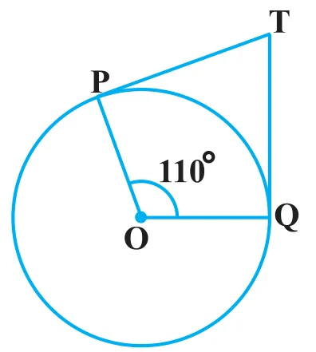
In quadrilateral OPTQ, ∠OPT = ∠OQT = 90°. So ∠PTQ = 360° − 90° − 90° − 110° = 70°.
∠PTQ = 70°: option (B)
3.If tangents PA and PB from a point P to a circle with centre O are inclined to each other at angle of 80°, then ∠POA is equal to (A) 50° (B) 60° (C) 70° (D) 80°
OP bisects ∠APB (Remark 2 after Th 10.2), so ∠APO = 40°. In ΔOAP, ∠OAP = 90°, so ∠POA = 180° − 90° − 40° = 50°.
∠POA = 50°: option (A)
4.Prove that the tangents drawn at the ends of a diameter of a circle are parallel.
Given: AB is a diameter of a circle with centre O; PQ is the tangent at A and RS the tangent at B.
OA ⊥ PQ and OB ⊥ RS (Th 10.1). So ∠PAB = 90° and ∠ABS = 90°.
∠PAB = ∠ABS, and these are alternate angles made by the transversal AB with PQ and RS.
So PQ ∥ RS ∎
5.Prove that the perpendicular at the point of contact to the tangent to a circle passes through the centre.
Let AB be the tangent at P to a circle with centre O. Suppose the perpendicular to AB at P is the line PX and it does not pass through O.
By Th 10.1, OP ⊥ AB, so ∠OPB = 90°. Also ∠XPB = 90°. So ∠OPB = ∠XPB, which is possible only if the lines PO and PX are the same.
So the perpendicular at P passes through O ∎
This is the “normal” of NCERT Remark 2.
6.The length of a tangent from a point A at distance 5 cm from the centre of the circle is 4 cm. Find the radius of the circle.
Let the tangent touch at P. ∠OPA = 90°, so OP² = OA² − AP² = 25 − 16 = 9.
Radius = 3 cm
7.Two concentric circles are of radii 5 cm and 3 cm. Find the length of the chord of the larger circle which touches the smaller circle.
Let chord AB touch the smaller circle at P. OP ⊥ AB and P is the mid-point of AB (Example 1).
AP = √(OA² − OP²) = √(25 − 9) = 4 cm.
AB = 2 × 4 = 8 cm
8.A quadrilateral ABCD is drawn to circumscribe a circle (see Fig. 10.12). Prove that AB + CD = AD + BC.
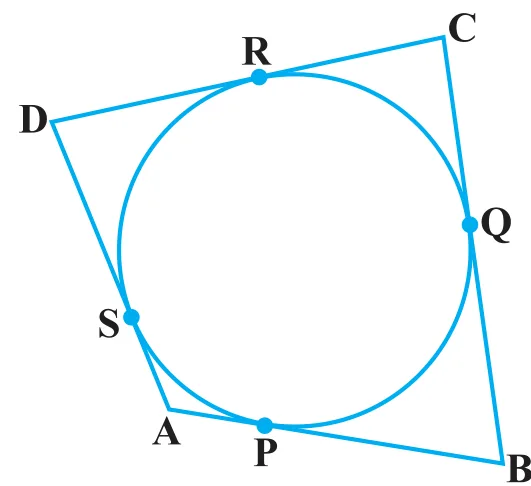
The circle touches AB, BC, CD, DA at P, Q, R, S. Tangents from an external point are equal (Th 10.2):
AP = AS … (1), BP = BQ … (2), CR = CQ … (3), DR = DS … (4)
Adding: AP + BP + CR + DR = AS + BQ + CQ + DS
(AP + BP) + (CR + DR) = (AS + DS) + (BQ + CQ)
AB + CD = AD + BC ∎
See it in Lab 1.
9.In Fig. 10.13, XY and X′Y′ are two parallel tangents to a circle with centre O and another tangent AB with point of contact C intersecting XY at A and X′Y′ at B. Prove that ∠AOB = 90°.
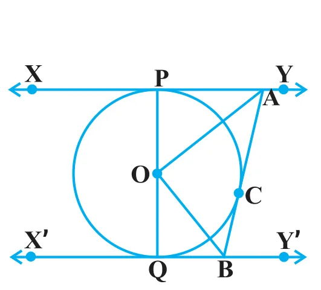
Let XY touch the circle at P and X′Y′ at Q. Join OC. Since the tangents at P and Q are parallel, POQ is a diameter (a straight line).
In ΔOPA and ΔOCA: OP = OC (radii), AP = AC (Th 10.2), OA common. So ΔOPA ≅ ΔOCA (SSS) and ∠POA = ∠COA … (1)
Similarly ΔOQB ≅ ΔOCB, so ∠QOB = ∠COB … (2)
POQ is a straight line: ∠POA + ∠COA + ∠COB + ∠QOB = 180°. Using (1) and (2): 2∠COA + 2∠COB = 180°.
∠AOB = ∠COA + ∠COB = 90° ∎
Asked as CBSE 2024 Q30(A). See it in Lab 4.
10.Prove that the angle between the two tangents drawn from an external point to a circle is supplementary to the angle subtended by the line-segment joining the points of contact at the centre.
Let PA and PB be tangents from P to a circle with centre O. ∠OAP = ∠OBP = 90° (Th 10.1).
Angle sum of quadrilateral OAPB: ∠AOB + ∠OAP + ∠APB + ∠OBP = 360°, so ∠AOB + 90° + ∠APB + 90° = 360°.
∠APB + ∠AOB = 180° ∎
11.Prove that the parallelogram circumscribing a circle is a rhombus.
Let parallelogram ABCD circumscribe a circle. By Q8, AB + CD = AD + BC.
In a parallelogram AB = CD and AD = BC, so 2AB = 2BC, i.e. AB = BC.
So AB = BC = CD = DA: all four sides are equal.
ABCD is a rhombus ∎
12.A triangle ABC is drawn to circumscribe a circle of radius 4 cm such that the segments BD and DC into which BC is divided by the point of contact D are of lengths 8 cm and 6 cm respectively (see Fig. 10.14). Find the sides AB and AC.
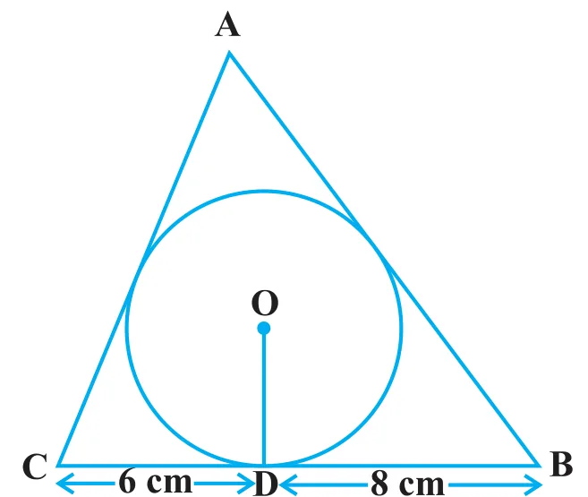
Let the circle touch AB at F and AC at E, and let AF = AE = x. Then BF = BD = 8 cm and CE = CD = 6 cm (Th 10.2).
Sides: AB = x + 8, AC = x + 6, BC = 14. Semi-perimeter s = (2x + 28)/2 = x + 14.
Area by Heron: √(s(s − a)(s − b)(s − c)) = √((x + 14)(x)(6)(8)) = √(48x(x + 14)).
Area as three triangles OBC, OCA, OAB, each with height r = 4: ½ × 4 × (14 + x + 6 + x + 8) = 2(2x + 28) = 4(x + 14).
So 48x(x + 14) = 16(x + 14)², i.e. 3x = x + 14 (dividing by 16(x + 14)), so x = 7.
AB = 15 cm, AC = 13 cm
Check: s = 21, area = √(21 × 7 × 6 × 8) = 84 = 4 × 21 ✓. Try other values in Lab 2.
13.Prove that opposite sides of a quadrilateral circumscribing a circle subtend supplementary angles at the centre of the circle.
Let ABCD circumscribe a circle with centre O, touching AB, BC, CD, DA at P, Q, R, S. Join OA, OB, OC, OD and OP, OQ, OR, OS. This makes 8 angles at O: ∠1 (AOP), ∠2 (POB), ∠3 (BOQ), ∠4 (QOC), ∠5 (COR), ∠6 (ROD), ∠7 (DOS), ∠8 (SOA).
ΔOAP ≅ ΔOAS (SSS: OP = OS, AP = AS, OA common), so ∠1 = ∠8. Similarly ∠2 = ∠3, ∠4 = ∠5, ∠6 = ∠7.
The angles round O add to 360°: 2∠1 + 2∠2 + 2∠5 + 2∠6 = 360°, so (∠1 + ∠2) + (∠5 + ∠6) = 180°.
∠AOB + ∠COD = 180° ∎
In the same way, (∠3 + ∠4) + (∠7 + ∠8) = 180°, i.e. ∠BOC + ∠AOD = 180°.
Asked as CBSE 2025 Q26(b).